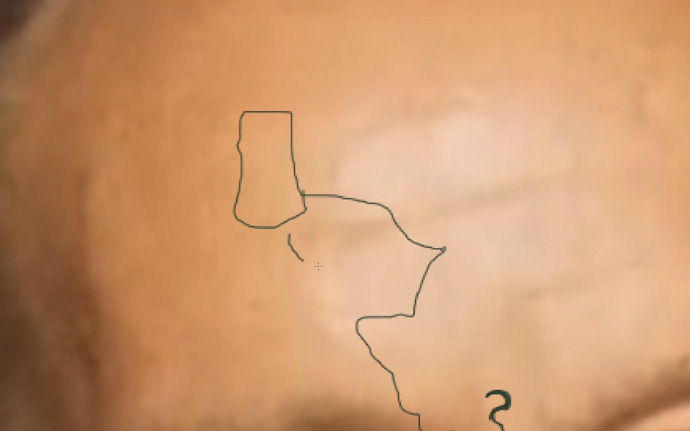
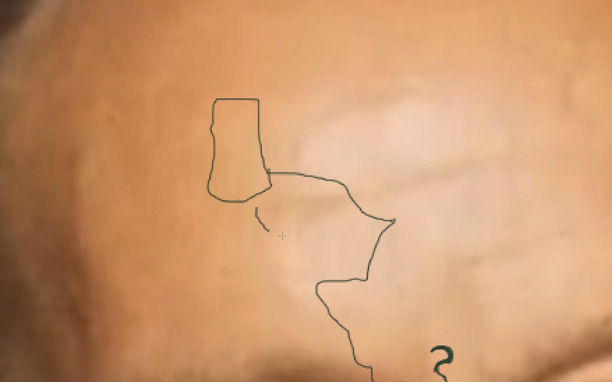
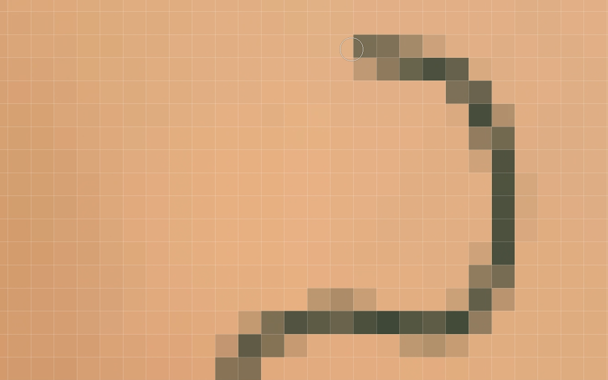
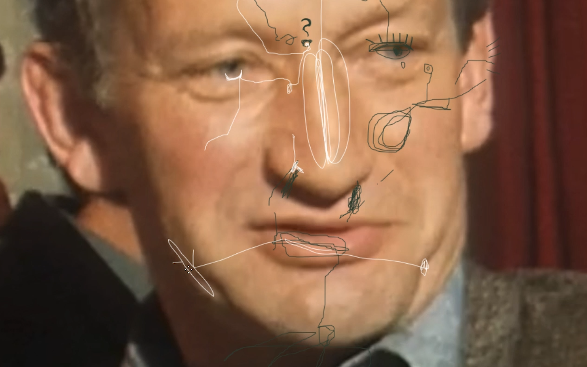
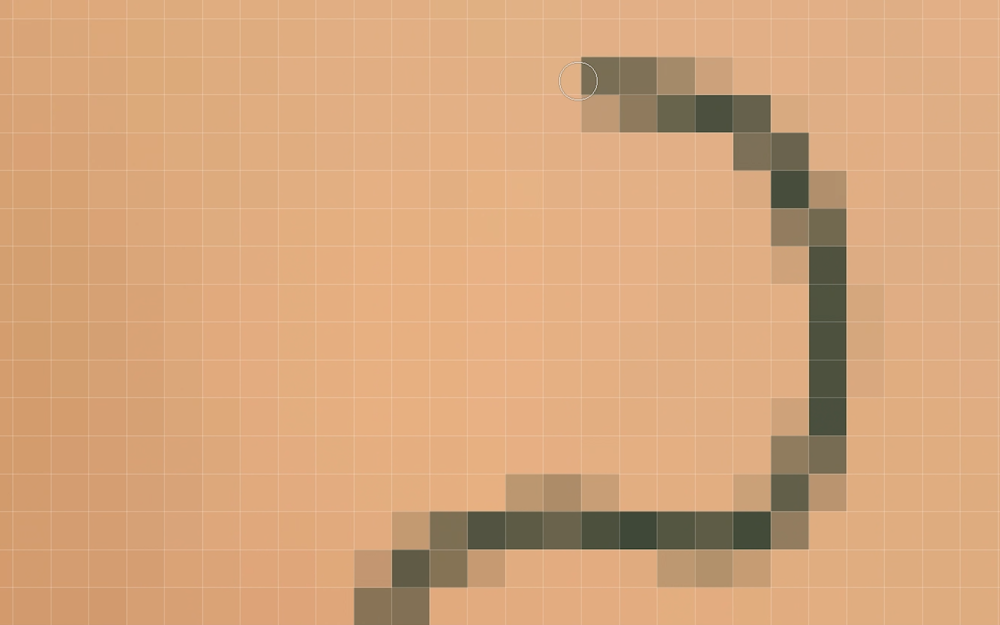
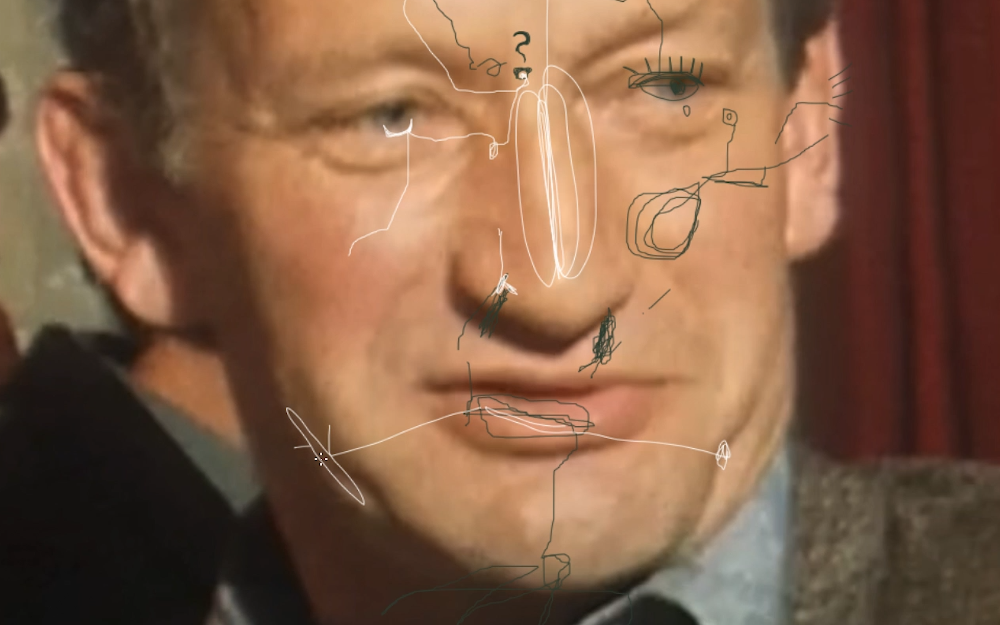

 



> to selected works
Dear grandfather
2021
video
16:9, 7:00, HD, stereo, loop
«Of course Im against it, too» – In 1975,
the artist’s grandfather has been stating his
opinion on the women’s right to vote (on a communal level) on
Swiss national tv. That footage has only been found
by the artist in 2021, 14 years after his death.
How to deal with contradictory feelings
towards beloved family members with
whom one dissents fundamentally about basic
political matters, worldviews and urgencies?
This piece is an investigation on such tensions: the
video works with and through the tv show’s footage.
Like traces of a letter or a ‹map of
thought›, writings and drawings are directly
being marked on the grandfather’s face, onto
the surface of the very moment of his «painful»
statements. The image is being repeated and zoomed
in excessively attempting to achieve opacity and
proximity, an understanding that might never be
obtained. Thus, the question processualy shifts
from "How to relate?" towards: "How to deal with
non-relating?"